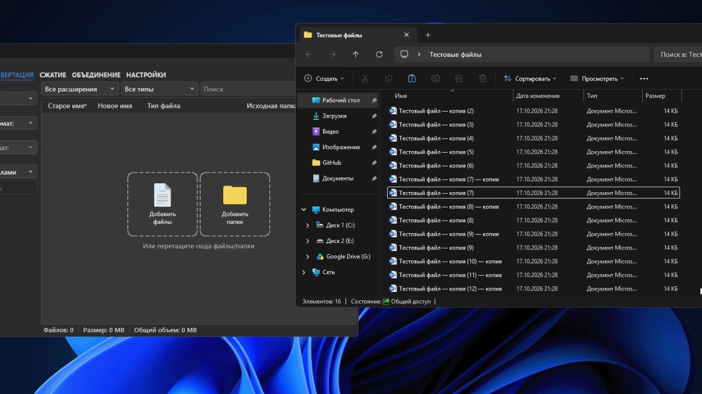
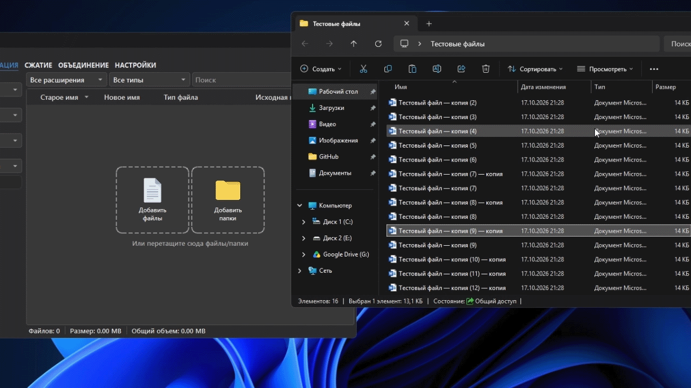
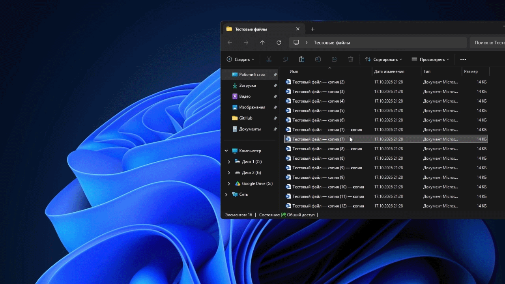
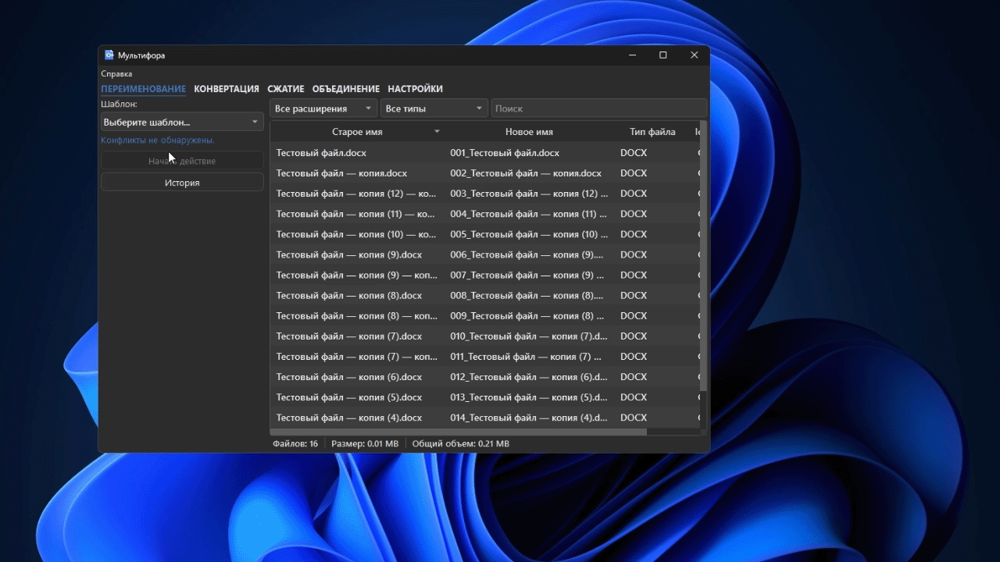
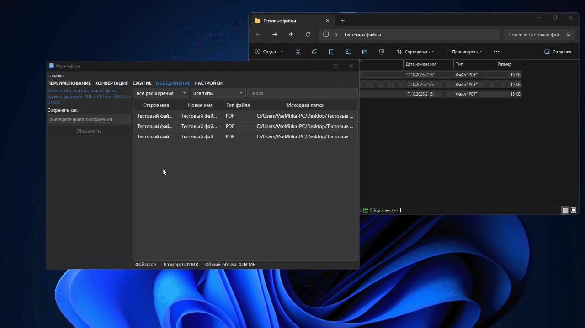
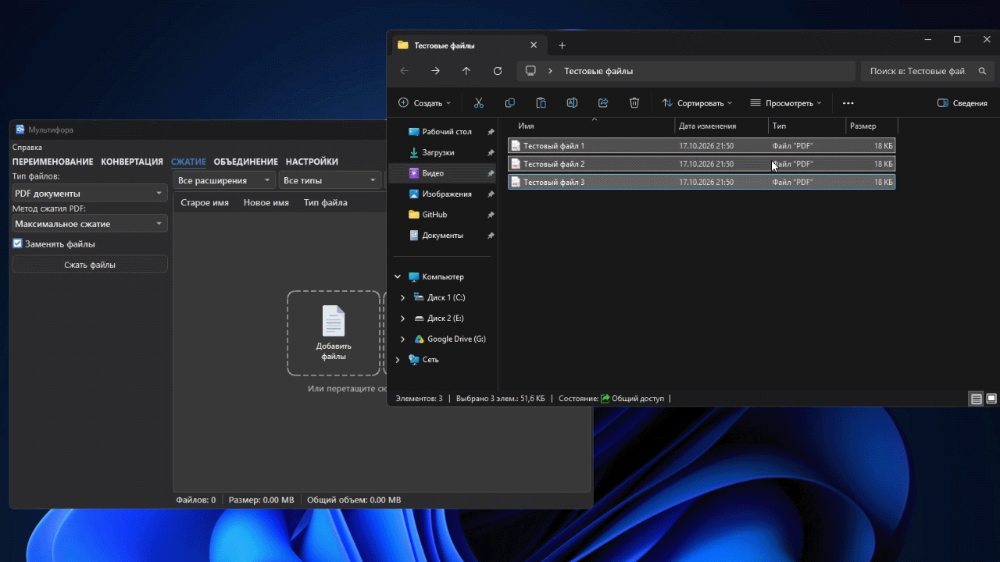
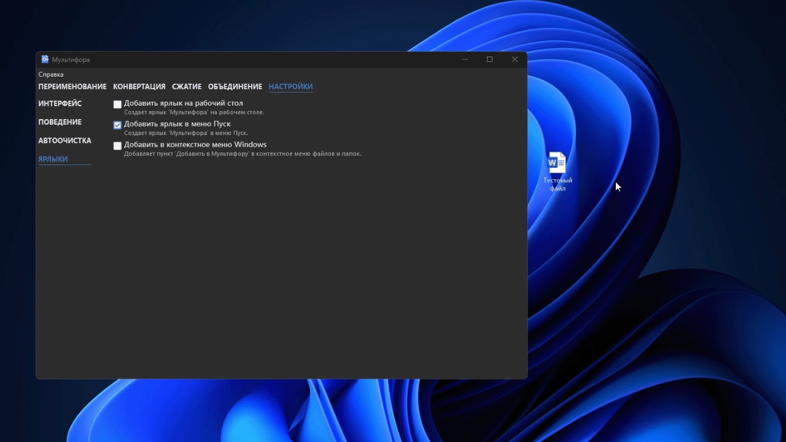

Полное руководство пользователя
Мультифора помогает обработать несколько файлов за одну операцию: переименовать, конвертировать, объединить или сжать. Все действия выполняются на компьютере под Windows — файлы не загружаются на сайт.
Что понадобится
- Windows 10 или 11, 64-битная версия;
- файлы для обработки;
- для части преобразований офисных документов — установленный и активированный Microsoft Word.
Если программа ещё не установлена, начните со страницы установки.
Как устроена работа
Любая операция начинается с очереди файлов и выбора вкладки:
- Добавьте файлы или папку в очередь.
- При необходимости оставьте только нужные строки, измените их порядок или выделите часть файлов.
- Выберите ПЕРЕИМЕНОВАНИЕ, КОНВЕРТАЦИЯ, ОБЪЕДИНЕНИЕ или СЖАТИЕ.
- Настройте параметры и проверьте будущий результат.
- Нажмите кнопку запуска внизу вкладки и откройте созданные файлы.
Если в списке выделены строки, операция применяется к ним. Если ничего не выделено — к подходящим файлам из очереди. Для объединения порядок строк определяет порядок страниц или документов в результате.
Добавление и подготовка файлов
Добавить файлы можно перетаскиванием в окно, через кнопку добавления, выбором папки или через пункт «Добавить в Мультифору» в Проводнике Windows. При добавлении папки программа предложит добавить её целиком либо только содержимое.



Очередь можно искать, фильтровать, сортировать по столбцам и менять вручную перетаскиванием строк. Удалите из неё файлы, которые не должны участвовать в операции. Повторное добавление одного пути не создаёт дубликат.
1. Пакетное переименование
Откройте ПЕРЕИМЕНОВАНИЕ и выберите шаблон. В зависимости от шаблона появляются параметры: нумерация, дата, текстовая замена, данные EXIF и другие поля. До запуска программа показывает будущие имена в очереди и проверяет недопустимые символы, одинаковые цели и конфликты с существующими файлами.

- Добавьте в очередь файлы одного сценария, например фотографии поездки.
- Выберите шаблон и заполните его параметры.
- Проверьте столбец с новым именем у каждого файла. Обратите внимание на расширение и нумерацию.
- Нажмите «Начать действие».
- При необходимости откройте «Историю», чтобы посмотреть недавние операции.
Пользовательские шаблоны можно сохранить, экспортировать в JSON и импортировать на другом компьютере. Подробности — на странице пакетного переименования.
2. Конвертация файлов
На вкладке КОНВЕРТАЦИЯ последовательно выберите тип файла, исходный и целевой формат. Список форматов изменяется в зависимости от выбранного типа и исходного формата, поэтому сначала добавьте подходящие файлы.

Затем задайте способ сохранения:
- Спрашивать каждый раз — программа попросит указать место при запуске;
- Рядом с исходными файлами — результаты появятся рядом с источниками;
- В папку «Конвертированные» — рядом с каждым источником создаётся одноимённая подпапка;
- В отдельную папку — выберите общую папку кнопкой «Выбрать папку».
После выбора форматов и места сохранения нажмите «Конвертировать». Откройте несколько получившихся файлов, прежде чем удалять оригиналы: сложная вёрстка, шрифты, таблицы и изображения могут выглядеть по-разному в другом формате.
Полный список поддерживаемых пар форматов есть в справке по конвертации.
3. Объединение документов
Вкладка ОБЪЕДИНЕНИЕ собирает один файл из очереди. Поддерживаются только наборы одного типа: PDF с PDF или DOCX с DOCX.

- Добавьте нужные документы в очередь.
- Расположите их в требуемом порядке — он станет порядком в итоговом файле.
- В поле «Сохранить как» укажите имя и место итогового файла.
- Нажмите «Объединить» и откройте результат для проверки.
Не смешивайте PDF и DOCX в одной операции. Если кнопка неактивна, проверьте, что выбран путь результата и в очереди есть подходящие файлы.
4. Сжатие изображений и PDF
Во вкладке СЖАТИЕ сначала выберите тип: Изображения или PDF документы. Настройки меняются в зависимости от этого выбора.

Изображения
Выберите уровень для PNG/JPG:
| Режим | Когда выбирать |
|---|---|
| Максимальное сжатие, 40% | Когда важнее маленький размер, чем детализация. |
| Сбалансированное, 65% | Универсальный вариант для отправки и публикации. |
| Хорошее качество, 85% | Рекомендуемый вариант, если изображение будут рассматривать. |
| Максимальное качество, 95% | Небольшое уменьшение размера с минимальной потерей качества. |
Укажите, куда сохранить результат: заменить исходные файлы, положить рядом с ними или выбрать отдельную папку. По умолчанию используется безопасный вариант рядом с источником: новое изображение получает суффикс _compressed.
Выберите один из методов:
- Авто — рекомендуемый стартовый вариант;
- Максимальное сжатие — максимальное уменьшение размера, но возможно заметное ухудшение качества;
- Сохранить качество — более щадящая обработка;
- Только оптимизация — удаление лишних данных без агрессивного перекодирования.
При необходимости включите «Заменять файлы». Сжатый PDF сохраняется рядом с исходником, если замена выключена. Уже оптимизированный PDF может почти не уменьшиться — это нормальный результат.
Нажмите «Сжать файлы» и сравните размер и качество результата с оригиналом. Дополнительные советы — на странице объединения и сжатия.
Настройки и Проводник Windows
На вкладке НАСТРОЙКИ можно выбрать оформление, настроить очистку очереди после успешных операций и добавить ярлыки. Чтобы добавлять файлы прямо из Проводника:
- Откройте НАСТРОЙКИ.
- Включите «Добавить в контекстное меню Windows».
- В Проводнике щёлкните правой кнопкой по файлу или папке и выберите «Добавить в Мультифору».

Настройка действует только для текущего пользователя Windows и не требует прав администратора. Подробнее — в разделе настроек и контекстного меню.
Где искать результат и что делать при ошибке
- Конвертированные файлы появляются в выбранном месте сохранения.
- Результат объединения сохраняется в путь из поля «Сохранить как».
- Сжатые изображения по умолчанию лежат рядом с исходниками и имеют суффикс
_compressed. - Сжатые PDF лежат рядом с оригиналом, если не включена замена.
Если действие не запускается, проверьте формат файлов, доступ к папке и свободное место на диске. Через «Справка» можно скачать журналы работы. Перед отправкой обращения удалите из журналов личные пути, документы, пароли и токены. Более подробные решения собраны в разделе устранения неполадок.
Короткий безопасный сценарий
- Скопируйте исходные файлы в отдельную рабочую папку.
- Добавьте 2–3 копии в Мультифору.
- Выполните нужную операцию с настройками по умолчанию.
- Проверьте имена, содержимое, размер и место сохранения результатов.
- Только после этого обработайте весь набор файлов.